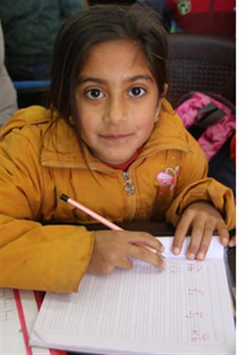
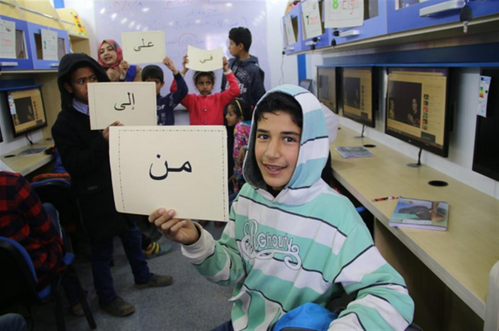

Hiba, an eight-year old Syrian refugee, is the road to school success thanks to an Islamic Relief mobile education unit in Jordan.
Schools in the northern governorate of Mafraq are typically over-subscribed, running in shifts as they try to keep up with demand. Many children are missing out on a quality education as a result.
“They used to go to school and live a normal life”
Refugee children are most at risk of missing out on school, since their families often face dire poverty. It means families like Hiba’s depend on children earning, not learning.
“My two eldest children work on farms during the summer season,” says Hiba’s mother. “They never worked before. They used to go to school and live a normal life like any other child.
“They earn a bit of money, and it barely helps cover our basic expenses. We are a big family, nine [of us are] living in two rooms.”
“I was terrified of losing my children”
Meeting the cost of sending Hiba and her sisters to school is a struggle, she explains. And, with the nearest school a considerable distance from home, simply getting there is an enormous challenge.
“We live far away from [where there are] jobs, shops and schools,” says Hiba’s mother, explaining that the nearest public school is 30 minutes’ walk away. “I will not let my daughters walk alone for a long distance.
“It is not safe, and stray dogs attack children. I left Syria because I was terrified of losing one of them, and I will not let it happen here. To get to school they depend on a UNICEF bus. Otherwise they would never get to school.”

Hiba learning the English alphabet in the Islamic Relief mobile education unit
“The teachers were so nice”
The overcrowded school which Hiba and her sisters attend has on average 40-45 students per class. The big class sizes limits the quality of education.
So Hiba and her siblings jumped at the chance to attend the Islamic Relief mobile education unit too. The unit – a specially adapted and equipped truck – travelled around Mafraq serving Jordanian and refugee children in communities with poor access to schools.
Offering a local and safe space to learn, the unit benefited from strong links to local communities and provided alternative learning to bridge the education gap.
“We attended Arabic, English and Maths class,” says Hiba. “The teachers were so nice to us. We played, drew and laughed together. I liked the screens inside the most, we used them to watch songs about letters and numbers.”
“My children were excited to attend the classes,” adds her mother. “They used to wake up and sit outside the house waiting for the Islamic Relief [mobile unit]. I believe that nothing is better than education. What you have done for them is amazing, so thank you!”

Arabic, English and mathematics lessons were delivered to children in remote communities
The unit also provided school kits, offered counselling and support services, and taught parents and local communities how to protect children and support those with disabilities.
Over 664,330 Syrian refugees are now thought be now living in Jordan. Nearly half are children, and of these 40% are estimated to be out of school.
The project began in 2017 and ended earlier this month, having helped 330 children. Islamic Relief is working to extend it for another year.
SOURCE: ISLAMIC RELIEF WORLDWIDE